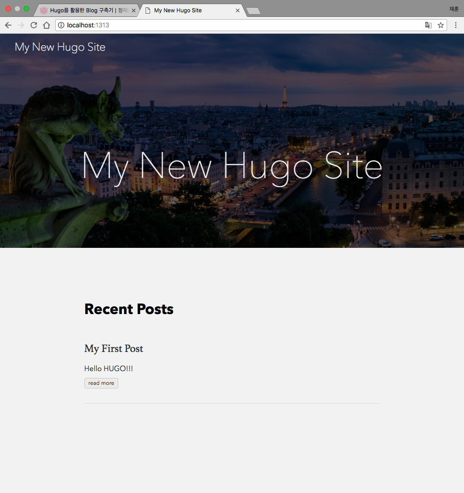

Hugo를 활용한 기술 블로그 구축기

현재 보고계신 블로그는 Hugo + Github Pages로 운영되고 있습니다. 이번 글에서는 Hugo를 활용한 Static Site 구축에 대해서 얘기해볼까 합니다.
CMS에서 Static Generator까지
많은 사람들이 블로그를 구축한다고 했을 때, 가장 많이 떠올리는 것은 다음과 같이 2가지 형태일 것입니다.
- Naver Blog, Tistroy, Blogger 등등
- Wordpress, Drupal, Joomla
첫번째 형태인 Naver나 Tistroy의 포털 사이트에서 제공하는 가입형 블로그 서비스는, 단순하게 가입만 해도 사용할 수 있기 때문에, 도메인이나 호스팅 등등의 것들을 신경쓰지 않고 바로 글을 작성할 수 있죠. 그러나, 운영자가 블로그를 커스터마이징할 수 있는 영역이 매우 적습니다.
그래서 처음에 기술 블로그를 운영하려고 했을 때 선택한 형태는, CMS를 사용하는 것이었습니다. CMS는 ‘Contents Management System’의 약자로 Blog를 직접 설치해서 사용한다고 이해를 하면 쉬울 것 같습니다. 저희가 생각했던 초기 컨셉에 맞게 블로그를 구성하고 싶었고, 다양한 기능들을 블로그에 적용하고 싶었습니다. 최종적으로 저희는 Wordpress를 선택했었습니다.
CMS 대장 Wordpress
Wordpress는 PHP로 이루어진 CMS의 최강자입니다. 수천가지의 테마와 플러그인을 유/무료 제공하고 있으며, 커뮤니티도 활발하게 이루어져 있습니다. Linkedin, ebay, mozilla등의 기업들도 Wordpress를 이용하여 블로그를 운영하고 있습니다.
Wordpress는 오픈소스 버전과 상용 버전이 존재합니다. 오픈소스는 직접 Wordpress를 설치하여 구성해야합니다. 서버, 도메인, 호스팅까지 모든 것들을 사용자가 직접 설정하고 운영해야합니다. 반대로 상용버전은 가입만 하면 별도의 서버를 운영할 필요없습니다. 단, 요금제에 따라 제공되는 기능이 다릅니다. 그래서 저희는 상용 버전의 Wordpress를 사용했습니다. 별도의 서버 및 호스팅에 대한 부분을 Wordpress에 맡기고, 저희는 블로그를 간단히 구성하고 글만 잘 작성하여 관리하면 될 줄 알았습니다…
글쓰기가 스트레스가 되다
Wordpress를 하면서, 가장 마음에 안들었던 점은 글쓰는 것이 너무 불편하고, 나타나는 결과물이 너무 만족스럽지 못했습니다. 현재, 저희는 업무 공유 Tool로 Atlassian의 Confluence를 사용하고 있습니다. Confluence에 온갖 내용들을 Draft형식으로 남기고, 그것을 직접 공유해서 사용했습니다. 별도로 글을 이쁘게 꾸밀 필요가 거의 없이, 깔끔하게 보여졌습니다. 바로, Wordpress에서 그런 것들을 기대했는데 전혀 아니었습니다. 글을 쓴 첫느낌은… Wordpad에 글을 적는 느낌을 받았고, 결국은 다시 깔끔하고 꾸미는 시간이 필요했습니다.
두번째는 너무 많고 복잡했습니다. 기본으로 제공되는 에디터의 기능이 너무 부족해서 플러그인을 설치하고, 표를 이쁘게 삽입하기 위해서 플러그인을 설치하고, 소셜을 연동하기 위해서 플러그인을 설치하고… 필요한 플러그인만 10개 이상이 넘어갔고, 주기적으로 업데이트도 해야했습니다. 그리고 제공되는 테마 중 마음에 드는 것이 없어서, 새로 적용하려고 해도 PHP를 어느정도 공부하고 Wordpress만의 구조를 이해하고 넣어야 했죠.
이 2가지가 저희에게는 너무 큰 부담으로 다가왔습니다. 그래서 과감히 Wordpress를 버렸습니다.
Solutions
저희는 기술 블로그를 운영함에 있어서 가장 중요하게 고려되어야 할 점들에 대해서 다시 정리하고, 한가지씩 답을 도출했습니다.
- 글을 작성하고 꾸미는 것이 쉬울 것
- 테마를 자유롭게 바꿀 수 있을 것
- 운영이 쉬울 것
3가지 항목을 모두 만족시킬 수 있는 방안에 대해서 고민한 결과, 최종적으로 도달한 결론은
GitHub Pages + Static Generator(정적 웹사이트 생성기)
로 기술 블로그를 구성하는 방법이었습니다.
GitHub Pages
GitHub pages란, GitHub Reposiroty의 내용들을 Web Page로 볼 수 있게 서비스해주는 기능입니다. GitHub Pages는 Static Contents만을 서비스할 수 있기 때문에, OpenSource Project들의 공식 Documents나 소개 서비스로 많이 사용됩니다. 사용법은 매우 간단합니다. [REPOSITORY_NAME].github.io으로 Repository를 Public으로 생성한 뒤 HTML을 해당 Reposiroty로 Push하면 완료입니다. Static Contents만 지정된 Repository에 Push 된다면, GitHub 서버에 무료로 호스팅할 수 있습니다(단, URL에 github.io가 붙습니다).
Static Generator
그럼 블로그 글은 HTML로 작성을 해야할까요? 아닙니다. 바로 Static Contents를 생성해 주는 것이 Static Generator의 역할이며, GitHub Pages와 결합되어 사용했을 때, 빛을 발합니다!!! 우리는 그저 텍스트(마크다운) 형식으로 글을 작성하고, 디렉토리 별로 글들을 정리하면 됩니다. 그러면 Static Generator가 자동으로 정리된 글들과 HTML 템플릿을 함께 합쳐서, 완전한 정적 웹사이트로 만들어 줍니다.
가장 대표적인 Static Generator는 Jekyll이 있습니다. Jekyll은 Ruby로 Github의 창업자인 Tom Preston-Werner가 만들었으며, 현재 GitHub Pages의 내부 엔진으로 사용되고 있습니다. Docker Documents가 Jekyll로 되어 있습니다.
Hugo
Static Generator는 Jekyll외에도 Hugo, Gatsby, Hexo 등등 많이 있습니다. 그 중에서도 저희 블로그는 Go언어로 만들어진 Hugo를 사용하였습니다. Jekyll을 사용할 경우, 별도의 Build 과정 없이 Repository에 Push만으로 작성한 글들이 알아서 Publishing됩니다. 하지만, 글이 많아질 수록 Jekyll의 빌드 성능은 현저하게 저하됩니다. 하지만, Hugo는 Build 과정이 있어도 성능저하 없이, 빠르게 글을 Publishing할 수 있습니다. Go나 기타 종속성 없이, Hugo CLI를 통해서 쉽게 블로그 및 글을 생성할 수 있습니다. 그래서, Hugo로 블로그를 만들게 되었습니다.
블로그 구축
자, 서론이 길었습니다. 지금부터는 Hugo를 사용하여 블로그를 구성해보겠습니다.
본 내용은 Mac을 기준으로 작성하였습니다. 타 OS는 Install Hugo를 참고하여 설치하시기 바랍니다.
Hugo 설치
Homebrew로 hugo를 설치합니다.
$ brew install hugo
... 설치 진행 ...
$ hugo version
Hugo Static Site Generator v0.34 darwin/amd64 BuildDate:Static Site 생성하기
hugo new site [PATH]로 Static Site를 생성합니다.
$ hugo new site tech-blog
Congratulations! Your new Hugo site is created in /tech-blog.
Just a few more steps and you're ready to go:
1. Download a theme into the same-named folder.
Choose a theme from https://themes.gohugo.io/, or
create your own with the "hugo new theme <THEMENAME>" command.
2. Perhaps you want to add some content. You can add single files
with "hugo new <SECTIONNAME>/<FILENAME>.<FORMAT>".
3. Start the built-in live server via "hugo server".
Visit https://gohugo.io/ for quickstart guide and full documentation.Hugo로 생성된 Static Site의 구조는 다음과 같습니다.
/tech-blog $ tree
.
├── archetypes
│ └── default.md
├── config.toml
├── content
├── data
├── layouts
├── static
└── themes각 항목에 대한 상세역할은 다음과 같습니다.
| 항목 | 내용 | 비고 |
|---|---|---|
| archetypes | 컨텐츠 기본 구조 정의 | default.md 파일에서 마크다운 구조 설정 |
| config.toml | Hugo 블로그 전체 설정 파일 | |
| content/posts | 블로그에 올라갈 마크다운 파일 위치 | |
| data | 태그, 카테고리, 저자 등 기타 항목 정의 | |
| layouts, static | 블로그의 템플릿 및 정적 리소스 위치 | 현재는 테마를 사용하기 때문에 사용안함 |
| themes | 사용할 Hugo 테마 위치 | |
| public | 블로그 빌드 타켓 폴더 | gh-pages 브랜치에 Push될 결과물 |
Theme 적용하기
갓 생성된 Static Site는 디렉토리로만 구성되어 있습니다. 따라서, Theme를 적용하여 화면이 보일 수 있도록 하겠습니다. Hugo도 Wordpress와 마찬가지로 다양한 Theme이 제공되고 있으며, 대부분 Open Source로 자유롭게 사용하실 수 있습니다. Theme에 대한 상세내용 Hugo Themes에서 확인할 수 있습니다.
$ cd tech-blog
/tech-blog $ git init;
Initialized empty Git repository in /Volumes/1000jaeh/test/workspace/tech-blog/.git/
/tech-blog $ git submodule add https://github.com/budparr/gohugo-theme-ananke.git themes/ananke;
Cloning into '/Volumes/1000jaeh/test/workspace/tech-blog/themes/ananke'...
remote: Counting objects: 1104, done.
remote: Compressing objects: 100% (17/17), done.
remote: Total 1104 (delta 9), reused 9 (delta 4), pack-reused 1083
Receiving objects: 100% (1104/1104), 2.51 MiB | 1.85 MiB/s, done.
Resolving deltas: 100% (584/584), done.Git으로 Pull 받은 Ananke Theme을 사용하기 위해서 config.toml 파일에 theme의 속성값을 ananke로 적용합니다.
baseURL = "http://example.org/"
languageCode = "en-us"
title = "My New Hugo Site"
theme = "ananke"TOML이란 “Tom’s Obvious, Minimal Language.“의 약자로 Github의 창업자인 Tom Preston-Werner가 만든 새로운 설정 파일 형식이다.
Posting
hugo new [PATH]를 사용하여 새로 포스팅할 글을 /content/posts내에 Markdown형식으로 생성합니다.
/tech-blog $ hugo new posts/my-first-post.md
/Volumes/1000jaeh/test/workspace/tech-blog/content/posts/my-first-post.md created생성된 Markdown은 다음과 같이 구성되어 있습니다.
---
title: "My First Post"
date: 2018-06-26T13:35:54+09:00
draft: true
---
Hello HUGO!!!상단의 --- 영역에 작성된 부분은 생성된 Post에 대한 Metadata를 담고 있는 Front Matter부분이며, 하단 부분부터 실제 글이 작성되는 부분입니다. Front Matter는 hugo new로 새로운 Post가 생성될 때 자동으로 작성되며, Metadata에 대한 Template는 /archetypes/default.md에서 확인하고 수정할 수 있습니다.
Run Hugo
구성된 Static Site를 hugo serve [FLAGS]로 실행시킵니다. Hugo의 Default Port는 1313입니다. -D 옵션은 draft상태의 글을 Build시킬지 확인하는 옵션입니다.
/tech-blog $ hugo serve -D
| EN
+------------------+----+
Pages | 10
Paginator pages | 0
Non-page files | 0
Static files | 3
Processed images | 0
Aliases | 1
Sitemaps | 1
Cleaned | 0
Total in 49 ms
Watching for changes in /Volumes/1000jaeh/test/workspace/tech-blog/{content,data,layouts,static,themes}
Watching for config changes in /Volumes/1000jaeh/test/workspace/tech-blog/config.toml
Serving pages from memory
Running in Fast Render Mode. For full rebuilds on change: hugo server --disableFastRender
Web Server is available at http://localhost:1313/ (bind address 127.0.0.1)
Press Ctrl+C to stophttp://localhost:1313에 접속하여, 정상적으로 Static Site가 구성되었는지, 작성한 글이 제대로 Posting 되었는지 확인합니다.

이번 글에서는 Static Generator인 Hugo로 간단하게 블로그를 구성해 봤습니다. 다음 글에서는 Travis-CI를 이용하여, Github에 자동으로 배포되고, 작성한 글이 Publishing되는지 확인해보겠습니다.